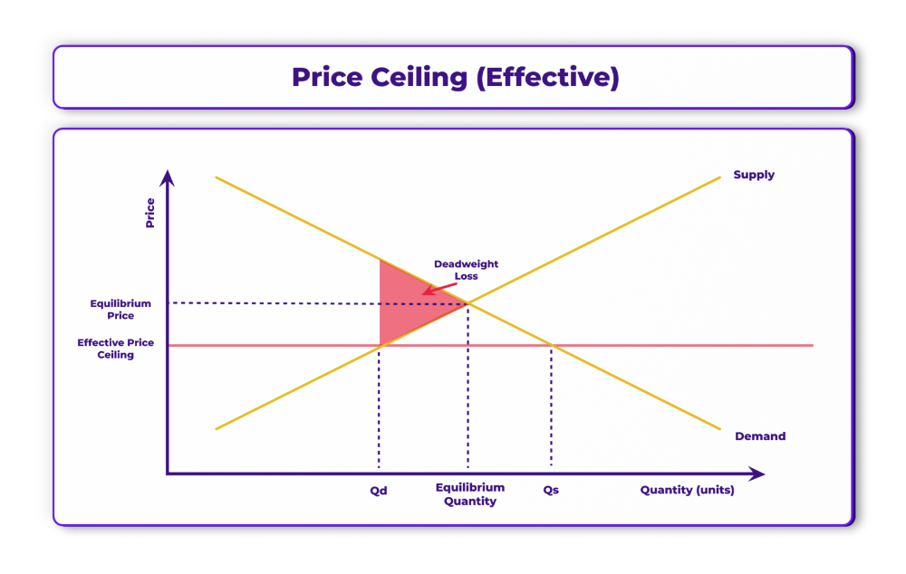

Price Control
Ang Price Control ay ang pagtatadhana ng pamahalaan ng pinakamababa at pinakamataas na presyong maaaring itakda sa mga produkto at serbisyo.
📜 R.A. 7581 – Price Control Act
Isang batas na nagbibigay ng proteksyon sa mga konsyumer sa pamamagitan ng pagpapatatag ng mga presyo ng mga pangunahing pangangailangan.
Price Ceiling
- Ang PINAKAMATAAS na presyong itinakda ng pamahalaan upang ipagbili ang mga produkto.
- Layunin nitong tulungan at bigyang proteksyon ang mga mamimili laban sa mga abusado at mapagsamantalang negosyante.
- Itinatakda ito na mas mababa sa equilibrium price na umiiral sa pamilihan.
Price Support
- Isinasagawa ito para sa mga prodyuser upang sila ay makabawas ng gastusin sa produksyon at makamit ang kita.
Floor Price
- Ang PINAKAMABABANG presyong itinakda ng pamahalaan upang ipagbili ang mga produkto.
- Itinakda ito na mas mataas sa equilibrium price na umiiral sa pamilihan.
